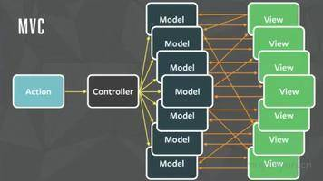

# Redux 使用总结
聊聊我对 redux 的理解。
- redux 发展历史
- redux 基础概念
- react 中使用 redux
- redux api
- react-redux api
# Redux 发展历史
我们先从历史的角度，了解一下 redux 的诞生。
# MVC 架构
在 mvc 架构时代，对数据、视图、逻辑有了清晰的分工。
- model：负责保存应用数据，和后端交互同步应用数据。
- view：表示当前状态的视图。
- controller：负责连接 model 和 view。model 的任何改变会应用到 view 中，view 的操作会通过 controller 应用到 model。
MVC 模式可以在多个 view 里修改同一个 model 的数据。当一个 model 的数据同时又对应多个 view 时，多个 model 和多个 view 就会耦合到一块，难以维护。

# MVVM 架构
为了解决 mvc 模式 model 和 view 高度耦合的问题，诞生了 mvvm。
MVVM 架构中，view 和 model 是不可以直接通讯的，在它们之间存在着 viewmodel 这个中间介充当着观察者的角色。当用户操作 view 时 viewmodel 能感知到变化并通知 model 发生相应改变；反之当 model 发生改变，viewmodel 也能感知到变化，使 view 作出相应更新。这个一来一回的过程就是我们所熟知的双向绑定。
如果一个 view 的变化会间接影响其他 view 的话，数据流就会变得非常复杂。
- 用户改变 view
- view 通知 viewmodel
- viewmodel 修改 model
- model 通知相关的 viewmodel
- viewmodel 更新相关的 view
如果一个组件的 view 的变化影响了其他组件的 view，就会产生新的更新数据流。
- 部分被更新的 view 又会通知对应的 viewmodel
- viewmodel 去修改 model
- 产生新的更新流
# Flux 架构
为了解决 mvvm 出现的数据流混乱问题，诞生出了 flux。
Flux 架构采用单向数据流的方式管理数据的流动。
- view：视图层。
- action：视图层发出的消息（例如 click 事件）。
- dispatcher：用来接收 action、执行回调函数。
- store：用来存放应用的状态，一旦发生变动，就会通知 view 更新页面。

如图所示，flux 引入了单向数据流，理清了混乱的业务逻辑，越来越被开发者所接受。flux 存在多种实现，redux 就是其中一种。
# Redux 基本概念
Redux 是 js 状态管理容器，为 js 提供提供可预测化的状态管理。
核心概念：
- web 应用是一个状态机，视图与状态是一一对应的。
- 所有的状态，保存在一个对象里面，使用单向数据流操作这个对象。
Redux 采用函数式编程的写法，实现了单向数据流，同时封装了一个订阅者模式，在数据改动时，会给订阅者发布消息。
import { createStore } from 'redux';
// 定义一个改变 store 数据的方法
function reducer(state,action){
switch(action.type){
case 'xxx':
return {...state,other}
default 'xxx':
return {...state,other}
}
}
const store = createStore(reducer);
// 获取 store 中的数据
store.getState();
// 改变 store 中的数据
store.dispatch({
type:'xxx',
data:'123'
});
// 订阅 store 改变后的事件
store.subscribe(()=>{
console.log('store changed');
});
2
3
4
5
6
7
8
9
10
11
12
13
14
15
16
17
18
19
20
21
22
23
24
25
26
27
# Redux 工作流
Redux 把所有的状态都存在了一个对象里，这个对象是只读的，必须通过指定工作流才能修改。
view -> dispatch(action) -> store(reducer) -> store(subscribe) -> view。
视图层 -> 触发 action 事件 -> 根据 action 匹配 reducer -> 根据 reducer 返回新 store -> 通知页面更新 -> 视图层更新。

# React 中使用 Redux
在 React 中， 我们使用 Redux 抽离页面中的 state，将状态抽离到 store 中进行统一管理，可以解决各种状态共享问题。抽离状态后，页面中的组件变为无状态组件，进一步优化渲染性能。
在 react 中使用 react-redux 来绑定 redux。
const store = createStore(reducer);
<Provider store={store}>
<Home />
</Provider>;
// home.jsx
class Home extends React.Component {
render() {
// 可以获取到store 中的数据
console.log(this.props);
return <div />;
}
}
function mapStateToProps(){}
function mapDispatchToProps(){}
export connect(mapStateToProps,mapDispatchToProps)(Home);
2
3
4
5
6
7
8
9
10
11
12
13
14
15
16
17
18
react-redux 实现原理：
- react-redux 底层使用 context api 实现数据分发。
- provider 先调用 createContext 创建一个 context。然后将接收到的 store 数据绑定到 context 上。
- connect 实现了一个高阶组件，返回一个被 React.Consumer 包裹的组件，同时执行 mapStateToProps 和 mapDispatchToProps 方法，将 store 中的数据和 dispatch 挂载到组件的属性上，最后在组件 componentDidMounted 生命周期上去订阅 store 的更新，在 componentWillUnmount 上去取消订阅。
其他可选库。
- connected-react-router（原 react-router-redux） 将路由的状态抽离到 Redux 中。
注意事项
- 不能在 reducer 中调用 dispatch，会造成数据流死循环。
- createStore 有 3 个参数，第一个是 reducer，第二个是 store 初始值，第三个是 enhace，扩展 reducer 用。
- combineReducer 用于合并 reducer，实现原理：就是一个纯函数，来组合多个 reducer。
- reducer 函数必须返回 state，否则会抛出错误。
- bindActionCreators 自动将参数 actions，绑定 dispatch。
# Redux 异步处理
Redux 拥抱函数式编程，在处理异步时并不是很友好，好在社区中有许多优秀的开源库可以直接使用。
- redux-thunk 可以返回一个函数类型的 action，接收 dispatch 参数，可以在异步回调中使用。
- redux-promise 可以返回一个 promise 类型的 action，直接 resolve 异步数据就行了。
- redux-saga 可以无侵入的处理异步，只需要拦截 action，然后在单独的 sagas 文件中进行异步处理，最后返回一个新的 action。通过 generate 实现。
上面介绍的 3 个库，我个人比较喜欢 redux-saga，但上手有点难度，具体可以去官网学习。
# Redux 优化
Redux 的优化和 store 密切相关，store 里的对象应尽可能地保持扁平化的设计结构，避免多层嵌套。除此之外，介绍几个优化 Redux 的库：
- reselect
- immutable
- other
# Reselect
对于 Redux 来说，每当 store 发生变化时，所有的 connect 都会重新计算，在一个大型应用中，会造成大量的重复计算。为了解决这个问题，Reselect 利用纯函数（同样的输入必定会有同样的输出）的特性，完成对 connect 计算时优化。
Reselect 使用场景
如果需要根据 store 中的某些数据进行组合计算，得到最终渲染的数据，使用 Reselect 能够很好地缓存每一次的运算结果。
# Immutable
React 拥抱函数式编程，在 setState 时，需要返回一个全新的 state 实例，可能出现这样的代码，Object.assign({},this.state,{changedata})。Immutable 可以更方便地生成一个新对象，并且帮我们做了内存优化（只生成改动部分的对象）。
- redux-immutable 将 store 中的所有对象，转换为 immutable 对象。
- react-immutable-proptypes 对 immutable 对象的类型检查。
注意
1、使用 immutable 后，所有的 state，store，router 中的对象都得改成 immutable 对象，改造成本较大。
2、在不支持 immutable 的地方，得进行 toJS 处理，消耗多余性能。
# 其他方法
1、在 Redux 中，每个 action 被分发，所有的 reducer 都会被执行一次，我们可以指定环境，让 Redux 在特殊环境之外，只执行 action 对应的 reducer。
const splitActions = (reducer,reg,actions)=>{
return (state,action)=>{
if(actions.indexOf(action.type) === -1) {
return reducer(state);
}
if(actions.type.match(reg)) {
return reducer(state);
}
return state;
}
combineReducers({
counter: splitActions(counter,/COUNTER$/,[SELECT_RADIO]),
radio: splitActions(counter,/RADIO$/,[INCREMENT_COUNTER])
});
2
3
4
5
6
7
8
9
10
11
12
13
14
15
2、当我们有连续多个独立的 action 触发时，我们只需要关心最终的状态，即可以把 action 进行合并。
dispatch(action1);
dispatch(action2);
dispatch(action3);
// 转换为
dispatch(batchActions([action1, action2, action3]));
const BATCH = 'BATCHED_ACTIONS';
const batchActions = actions => ({ type: BATCH, payload: actions });
const canBatchedReducer = reducer => {
const batchedReducer = (state, action) => {
if (action.type === BATCH) {
return action.payload.reduce(batchedReducer, state);
}
return reducer(state, action);
};
};
2
3
4
5
6
7
8
9
10
11
12
13
14
15
16
17
18
3、如果 reducer 会进行大量的计算操作，可以使用 redux-worker 让子进程去帮忙计算。
# Redux API
Redux 的 api 很精简，只有 5 个。
- createStore 创建 store。
- combineReducers 合并 reducer。
- applyMiddleware 添加中间件。
- bindActionCreators 绑定 dispatch 到 action。
- compose 函数组合。
store 对象：
- 维持应用的 state。
- 提供 getState() 方法获取 state。
- 提供 dispatch(action) 方法更新 state。
- 通过 subscribe(listener) 注册监听器，可通过但会的对象取消监听。
- 通过 replaceReducer(nextReducer) 替换 store 当前用来计算 state 的 reducer。
# react-redux API
- provider 组件给子组件提供 store。
- connect 将 store 中的数据绑定到 react 组件上。
# connect 方法
connect 是连接 redux 和 react 和核心，包含 4 个参数。
connect(
[mapStateToProps],
[mapDispatchToProps],
[mergeProps],
[options]
);
2
3
4
5
6
# mapStateToProps
将 store 中的 state 映射到组件的 props 里。
# mapDispatchToProps
将 store 中的 dispatch 映射到组件的 props 里，一般配合 redux 的 bindActionCreators 直接把绑定好 dispath 的 action 映射到组件的 props 中。
# mergeProps(stateProps, dispatchProps, ownProps)
- stateProps：mapStateToProps 的返回值。
- dispatchProps：mapDispatchToProps 的返回值。
- ownProps: 组件自己的 props。
此方法方便对三种来源的 props 进行更好的分类、命名和重组，如果省略这个参数，默认情况下返回 Object.assign({}, ownProps, stateProps, dispatchProps) 的结果。
# options
如果指定这个参数，可以定制 connect 的行为。
- pure: 默认值为 true。如果为 true，connect 中会定义 shouldComponentUpdate 方法实现浅比较，用来减少不必要的渲染，相当于 pureComponent。
- withRef: 默认值为 false。如果为 true，connect 会保存一个包装组件实例的 refs，该 refs 通过 getWrappedInstance 方法获得，并最终获得原始的 dom 节点。
# 总结
Redux 不仅实现了一套单向数据流，而且实现了组件状态和展示层的分离，可以在大型项目中管理好各个组件的状态。但随着新版 react hooks 的发布，使用 useReducer + useContext 管理数据的方式也十分友好，以后也会被更多人所使用。
# 相关链接
- 《深入 React 技术栈》
- 《React 状态管理与同构实战》